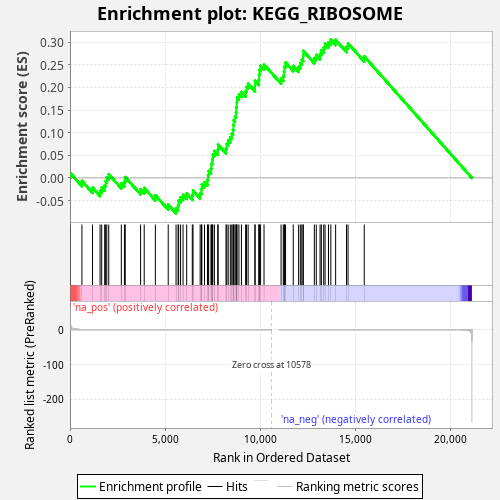
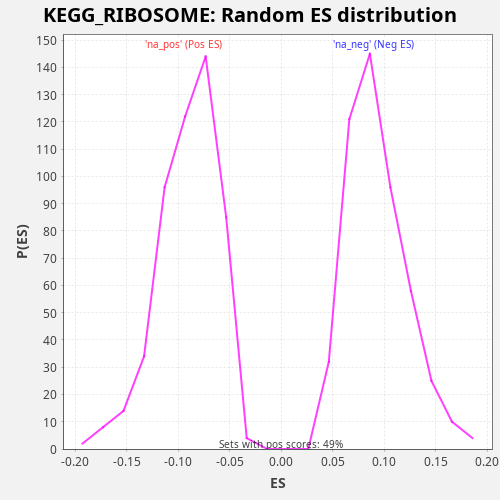

| Dataset | CCLE |
| Phenotype | NoPhenotypeAvailable |
| Upregulated in class | na_pos |
| GeneSet | KEGG_RIBOSOME |
| Enrichment Score (ES) | 0.3057557 |
| Normalized Enrichment Score (NES) | 3.2939413 |
| Nominal p-value | 0.0 |
| FDR q-value | 0.0 |
| FWER p-Value | 0.0 |

| SYMBOL | RANK IN GENE LIST | RANK METRIC SCORE | RUNNING ES | CORE ENRICHMENT | |
|---|---|---|---|---|---|
| 1 | RPS4Y1 | 8 | 25.904 | 0.0112 | Yes |
| 2 | RPS27L | 627 | 0.050 | -0.0065 | Yes |
| 3 | RPL22L1 | 1183 | 0.006 | -0.0213 | Yes |
| 4 | RPS11 | 1579 | 0.002 | -0.0284 | Yes |
| 5 | RPL13A | 1666 | 0.002 | -0.0209 | Yes |
| 6 | RPS19 | 1823 | 0.001 | -0.0166 | Yes |
| 7 | RPL28 | 1873 | 0.001 | -0.0073 | Yes |
| 8 | RPS10 | 1932 | 0.001 | 0.0015 | Yes |
| 9 | RPL21 | 2036 | 0.001 | 0.0083 | Yes |
| 10 | RPL36AL | 2697 | 0.000 | -0.0115 | Yes |
| 11 | RPS9 | 2861 | 0.000 | -0.0076 | Yes |
| 12 | RPL18 | 2903 | 0.000 | 0.0021 | Yes |
| 13 | RPS16 | 3711 | 0.000 | -0.0247 | Yes |
| 14 | RPSA | 3900 | 0.000 | -0.0220 | Yes |
| 15 | RPL3L | 4486 | 0.000 | -0.0381 | Yes |
| 16 | RPS18 | 5162 | 0.000 | -0.0586 | Yes |
| 17 | RPLP0 | 5574 | 0.000 | -0.0665 | Yes |
| 18 | RPS5 | 5680 | 0.000 | -0.0599 | Yes |
| 19 | RPLP1 | 5710 | 0.000 | -0.0496 | Yes |
| 20 | RPS26 | 5811 | 0.000 | -0.0428 | Yes |
| 21 | RPL13 | 5941 | 0.000 | -0.0373 | Yes |
| 22 | RPL17 | 6132 | 0.000 | -0.0347 | Yes |
| 23 | RPL26 | 6427 | 0.000 | -0.0370 | Yes |
| 24 | RPS2 | 6466 | 0.000 | -0.0272 | Yes |
| 25 | RPS15A | 6841 | 0.000 | -0.0333 | Yes |
| 26 | RPL6 | 6909 | 0.000 | -0.0249 | Yes |
| 27 | RPL4 | 6929 | 0.000 | -0.0142 | Yes |
| 28 | RPL23 | 7069 | 0.000 | -0.0091 | Yes |
| 29 | RPL10A | 7225 | 0.000 | -0.0049 | Yes |
| 30 | RPL15 | 7255 | 0.000 | 0.0054 | Yes |
| 31 | RPS6 | 7288 | 0.000 | 0.0155 | Yes |
| 32 | RPS20 | 7411 | 0.000 | 0.0213 | Yes |
| 33 | RPL12 | 7433 | 0.000 | 0.0319 | Yes |
| 34 | RPS28 | 7483 | 0.000 | 0.0412 | Yes |
| 35 | RPS3 | 7504 | 0.000 | 0.0519 | Yes |
| 36 | RPL36 | 7588 | 0.000 | 0.0596 | Yes |
| 37 | RPL3 | 7768 | 0.000 | 0.0627 | Yes |
| 38 | RPL29 | 7784 | 0.000 | 0.0736 | Yes |
| 39 | RPL37 | 8199 | 0.000 | 0.0656 | Yes |
| 40 | MRPL13 | 8240 | 0.000 | 0.0753 | Yes |
| 41 | RPS27 | 8315 | 0.000 | 0.0834 | Yes |
| 42 | RPL22 | 8427 | 0.000 | 0.0898 | Yes |
| 43 | RPL24 | 8503 | 0.000 | 0.0978 | Yes |
| 44 | RPL14 | 8567 | 0.000 | 0.1065 | Yes |
| 45 | RPS27A | 8588 | 0.000 | 0.1171 | Yes |
| 46 | RPL27 | 8607 | 0.000 | 0.1279 | Yes |
| 47 | RPS29 | 8672 | 0.000 | 0.1365 | Yes |
| 48 | RPL8 | 8726 | 0.000 | 0.1456 | Yes |
| 49 | RPS23 | 8742 | 0.000 | 0.1565 | Yes |
| 50 | RPL19 | 8763 | 0.000 | 0.1672 | Yes |
| 51 | RPL30 | 8777 | 0.000 | 0.1782 | Yes |
| 52 | RPS12 | 8878 | 0.000 | 0.1851 | Yes |
| 53 | RPL38 | 9009 | 0.000 | 0.1905 | Yes |
| 54 | RPL41 | 9232 | 0.000 | 0.1916 | Yes |
| 55 | RPL7 | 9277 | 0.000 | 0.2011 | Yes |
| 56 | RPS13 | 9362 | 0.000 | 0.2088 | Yes |
| 57 | RPS15 | 9723 | 0.000 | 0.2033 | Yes |
| 58 | RPS3A | 9724 | 0.000 | 0.2149 | Yes |
| 59 | RPL35A | 9926 | 0.000 | 0.2170 | Yes |
| 60 | RPS4X | 9937 | 0.000 | 0.2281 | Yes |
| 61 | RPL18A | 9956 | 0.000 | 0.2389 | Yes |
| 62 | RPL9 | 10017 | 0.000 | 0.2477 | Yes |
| 63 | RPL11 | 10197 | 0.000 | 0.2508 | Yes |
| 64 | RPL10 | 11093 | -0.000 | 0.2199 | Yes |
| 65 | RPL37A | 11209 | -0.000 | 0.2261 | Yes |
| 66 | RPS24 | 11251 | -0.000 | 0.2357 | Yes |
| 67 | RPL39 | 11271 | -0.000 | 0.2465 | Yes |
| 68 | RPL31 | 11329 | -0.000 | 0.2554 | Yes |
| 69 | RPL27A | 11733 | -0.000 | 0.2479 | Yes |
| 70 | RPS25 | 12015 | -0.000 | 0.2461 | Yes |
| 71 | RPL35 | 12105 | -0.000 | 0.2535 | Yes |
| 72 | FAU | 12183 | -0.000 | 0.2615 | Yes |
| 73 | UBA52 | 12252 | -0.000 | 0.2699 | Yes |
| 74 | RPL34 | 12259 | -0.000 | 0.2812 | Yes |
| 75 | RSL24D1 | 12842 | -0.000 | 0.2652 | Yes |
| 76 | RPL7A | 12943 | -0.000 | 0.2721 | Yes |
| 77 | RPLP2 | 13143 | -0.000 | 0.2742 | Yes |
| 78 | RPL23A | 13210 | -0.000 | 0.2827 | Yes |
| 79 | RPL26L1 | 13335 | -0.000 | 0.2885 | Yes |
| 80 | RPS7 | 13404 | -0.000 | 0.2969 | Yes |
| 81 | RPL36A | 13585 | -0.000 | 0.2999 | Yes |
| 82 | RPL5 | 13708 | -0.000 | 0.3058 | Yes |
| 83 | RPS8 | 13961 | -0.000 | 0.3054 | No |
| 84 | RPS21 | 14531 | -0.000 | 0.2900 | No |
| 85 | RPS17 | 14613 | -0.000 | 0.2978 | No |
| 86 | RPL32 | 15465 | -0.000 | 0.2689 | No |

{kind=link}
{kind=link}